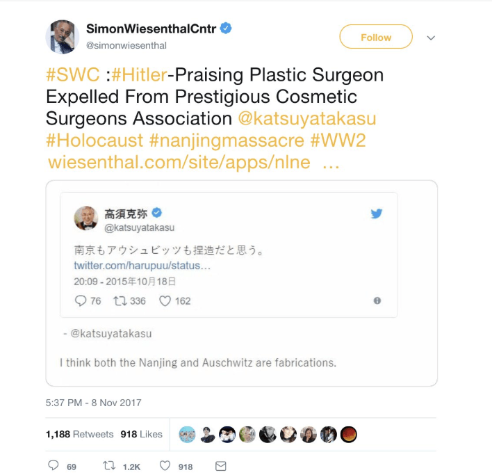

2. Overview of Recent Events
2-2. Investigation of Claims
In this section, we will outline each criticism leveraged against BTS during the controversy in question. This includes the denunciation of the group for the wearing of the offending T-shirt, as well as additional accusations of historical insensitivity from the Simon Wiesenthal Center.
We will then attempt to provide contextual information for each issue in the aim of giving readers a more nuanced understanding of these controversies.
The Simon Weisenthal Center Statement
On the afternoon of November 11 (EST), the Simon Wiesenthal Center (SWC) released a press statement which expanded the scale of the controversy considerably. (SWC, 2018 [20]). In a statement titled “Popular Korean Band Whose Japan Performance Was Cancelled For T-Shirt Mocking A-Bomb Victims, Once Posed With Nazi SS Death Head Symbols, Flew Nazi-Like Flags At Concert,” the associate dean of the center, Rabbi Abraham Cooper, stated, “…wearing a T-shirt in Japan mocking the victims of the Nagasaki A-bomb, is just the latest incident of this band mocking the past.” Referencing a hat with a historically Nazi-linked symbol a BTS member was seen wearing during a 2014 photoshoot, he stated that “the result [from wearing the hat] is that… young generations in Korea and around the world are more likely to identify bigotry and intolerance as being ‘cool’ and help erase the lessons of history… those designing and promoting this group’s career are too comfortable with denigrating the memory of the past” (SWC, 2018 [20]).
The Center further claimed that the group waved flags at a concert that “were eerily similar to the Nazi swastika” and demanded that they owed “the people of Japan and the victims of the Nazism an apology,” directly citing a video thread with Japanese captions found on Twitter (SWC, 2018 [20]). This video thread had been uploaded by a Japanese Twitter account by the name of “TAro”, which was created in November 2018 and deactivated soon after the scandal faded from the international media landscape. Before it disappeared, “TAro” was following a total of nine other Twitter accounts, one of which belonged to Katsuya Takasu – a plastic surgeon, Nazi sympathizer, and denier of the Nanjing Massacre who the SWC made it their mission1 to see removed from the American Academy of Cosmetic Surgeons in 2017 (SWC, 2017 [21]).
Screenshot by author.
After the SWC released this statement, many international media outlets, including ABS-CBN (ABS-CBN, 2018 [1]), The Sun (du Cann, 2018 [5]), The Korea Times (Lee, 2018 [11]), and The Guardian (McCurry, 2018 [15]), picked up the story and circulated the SWC’s list of accusations against BTS. However, these accusations were circulated without regard for their factual accuracy and in the absence of a more nuanced understanding of contemporary Korean-Japanese relations, a central contextual ground on which this controversy developed. In the following, we examine the factual accuracies of each of the accusations that have been made against the group over the course of this scandal and reflect on how these accusations have been received and reported on by the general media. Both BTS’ past choices and the media’s faulty reporting practices that we observe in detail below reveal how critical cultural sensitivity is for anyone that strives to successfully navigate global interactions today. We reflect on these lessons about cultural awareness at the end of this section.